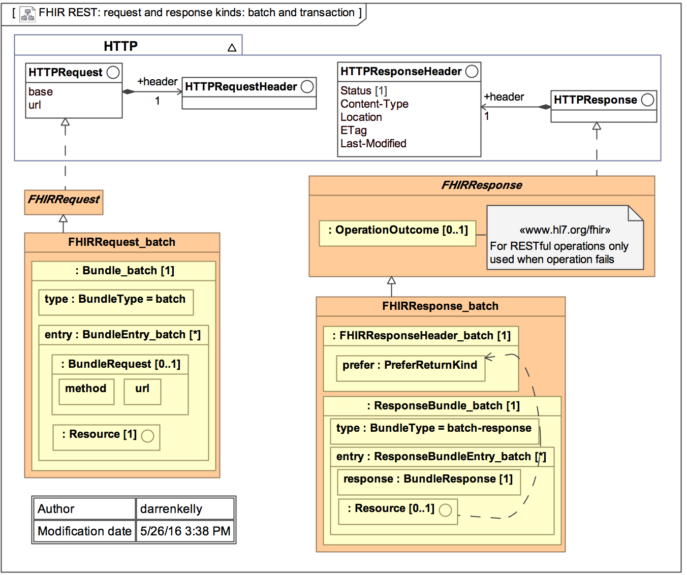

Purposes 2 and 3 set the foundation for future architectural rigor and resource governance to optimize
consistency, integrity and predictability of new or refined resources in the future. The actual rules
and patterns will be defined and refined in future FHIR releases. However, one general guideline to
state now is that resources generally reference resources in the same layer or higher. In other words,
a layer 4 resource will typically only reference resources in layers 4, 3, 2 or 1. There is nothing
prohibiting a layer 4 resource from referencing a layer 5 resource, but this is not as common.
Given this guideline, it is possible to identify the resources that are likely to be most common
across use cases and therefore demand the highest degree of consistency and governance. Further, the
framework helps identify the areas where creating new FHIR resources is the highest priority. It is
generally a higher priority to create FHIR resources in the higher layers (layers 1, 2 and 3) than
it is to create FHIR resources in the lower layers (layers 4 and 5) because the higher layer resources
will provide the greatest value across the largest number of use cases and stakeholders. This is not
to say that the business transactions needed for the higher layers are not important, it’s just that
they are not as common across the whole healthcare space.
The 6th layer of the framework are not actually resources. Profiles and Graphs are extensions of resources
or resource compositions that continue the progression through the FHIR Composition Framework. They provide
additional contextualization required to satisfy certain use cases.
将FHIR资源的创建与该框架结合起来，会带来一些预期的好处：
Organization and manageability of health domains - the framework provides a basis for decomposition and modularity
健康领域的组织和可管理性——框架为分解和模块化提供了基础
Identifying commonality - the framework teases out the common areas from the less common areas
识别共性——框架从非共性领域中梳理出共性领域。
FHIR resources prioritization - the framework provides a structure for determining priorities and delegating work
fhir resources优先级-框架提供了确定优先级和授权工作的结构
Tiered governance levels - the framework separates the areas needing the most stringent and universal governance from those that require more context-specific governance
分层治理级别-该框架将需要最严格和普遍治理的领域与需要更具体上下文治理的领域分开
Another useful tool for visualizing how FHIR resources are organized relative to each other can be found using the Resource Reference
Visualization tool on clinFHIR .
另外一种图形化FHIR resources，展示它们是如何联系的工具可以用clinFHIR
2.16.6 FHIR的实现--高级设计方面的考虑
2.16.6.1 FHIR Servers and the FHIR APIs FHIR Servers 和 the FHIR APIs
A FHIR REST server is any software that implements the FHIR APIs and uses FHIR resources to exchange data. The diagram below describes the FHIR interface definitions. The methods are classified as:
fhir rest服务器是实现fhir API并使用fhir资源交换数据的软件。下图描述了fhir接口定义。方法分为：
iServeInstance – methods that perform Get, Put or Delete operations on a resource
IServeInstance–对resource执行获取、放置或删除操作的方法
iServeType – methods that get type information or metadata about resources
IServeType–获取有关resource的类型信息或元数据的方法
iServeSystem – methods that expose or enable system behaviors.
IServerSystem–公开或启用系统行为的方法。
As mentioned, FHIR resources are optimized for stateless transactions with RESTful APIs. Although this is not the only way FHIR resources can be used, these types of transactions are the only ones with defined interfaces and behaviors in the FHIR specification.
如前所述，fhir resources针对使用RESTfulAPI的无状态事务进行了优化。尽管这不是fhir resources的唯一使用方式，但这些类型的事务是fhir规范中唯一具有定义的接口和行为的事务。
FHIR transactions follow a simple request and response transaction pattern. The request and response can be for a single payload or can operate as batch. The payload or a request and response consist of a header and the content of interest. See diagram below for details.
fhir事务遵循简单的请求和响应事务模式。请求和响应可以针对单个负载，也可以作为批处理操作。有效负载或请求和响应由一个头部和感兴趣的内容组成。详见下图。

2.16.6.3 Security 安全
(section to be filled out) (but see Security in the meantime).
(该部分待补充 ,目前可以参阅 安全 部分).
Example Use Cases Using FHIR
FHIR的示例用法
For illustrative purposes, the following diagram depicts a simple use case of a patient accessing their personal health record
(portal) enabled by an underlying electronic medical record (EMR) system. The EMR plays the role of the FHIR server in this example.
为了便于说明，下图描述了患者访问其个人健康记录的简单用例。
（门户）由基础电子病历（EMR）系统启用。在这个例子中，EMR扮演着fhir服务器的角色。
The pre-conditions for this use case are:
此用例的前提条件是：
the EMR implements the necessary FHIR APIs
EMR实现了必要的fhir API
the EMR implements the necessary authentication and authorization mechanisms
电子病历实施必要的认证和授权机制
the patient is successfully authenticated and authorized to access FHIR resources
患者已成功通过身份验证并获得访问fhir资源的授权。
The basic flow of the use case is that the patient registers (if required), logs in, enters search criteria to identify a patient or
patients of interest (the patient is most like themselves in this use case), retrieves clinical documents for the patient and
retrieves clinical resources for the patient. The use cases utilize the GET methods on the iServeInstance interface and works
with the following types of FHIR resources:
用例的基本流程是患者注册（如果需要）、登录、输入搜索条件以标识患者或
感兴趣的患者（在这个用例中，患者与自己最相似），为患者检索临床文档，以及
检索患者的clinical resources。用例使用IServeInstance接口上的get方法并工作
使用以下类型的fhir资源
The Patient resource
病人resource
One or more document resource(s)
一个或多个文档resource
One or more clinical resource(s)
一个或多个clinical resource
Although this example use case is very simple, more complex transactions using a combination of GETs, PUTs and DELETEs against resources and metadata can be envisioned. However, the exact details of these use cases including which methods are used, the orchestration of methods and the specific resources involved are outside the scope of the FHIR specification.
尽管这个示例用例非常简单，但是可以预见使用针对资源和元数据的GET、PUT和DELETE组合的更复杂的事务。但是，这些用例的确切细节，包括使用的方法、方法的编排以及所涉及的特定resource，都不在fhir规范的范围之内。
2.16.7 Outstanding Issues 突出的问题
Resource Consistency and Granularity – there is nothing intrinsically prohibiting one resource from duplicating the same information
as another resource. Further, there is nothing prohibiting resources with the same information from defining and modeling the data elements
differently.
HL7 has a number of processes to ensure that resources are consistently designed, but the question is when to be consistent within the
specification, and when to be consistent with the real world practices of healthcare - these are sometimes in conflict with each other.
Resource granularity is a related potential problem as there are variations in the size, complexity and comprehensiveness of the existing resources.
Resource一致性和粒度——本质上没有什么禁止一个Resource复制与另一个Resource相同的信息。
此外，没有禁止具有相同信息的资源以不同的方式定义和建模数据元素。
HL7有许多过程来确保资源的设计是一致的，但问题是什么时候在规范内保持一致，
什么时候与现实世界中的医疗实践保持一致——这些过程有时会相互冲突。
资源粒度是一个相关的潜在问题，因为现有资源的大小、复杂性和综合性都存在差异。
Further, the degree to which the FHIR specification can impose consistency is limited to how much agreement can be gained across various communities.
While the Implementers Safety Check List and the Considerations for
FHIR Resource Considerations provide guidance and promote consistency,
rules for achieving complete consistency of both content and granularity amongst resources are neither completely defined nor completely enforced.
Considering that FHIR is still a new and emerging standard, an over-abundance of constraint and rigor has been avoided to maximize
initial adoption. Further, there is a natural tension between consistency and an architectural virtue and the practicalities of supporting the real
practice of health care. Considering that FHIR ultimately is a reflection of the health
business processes it supports, FHIR will always carry forward some of the data discrepancies, inconsistencies and gaps that are present in the
practice of healthcare across different organizations and practitioners. Nonetheless, the
issues of resource consistency and granularity is a topic that gets considerable ongoing discussion, and may change as FHIR approaches a final
normative standard and as FHIR adoption approaches a level
where more control is warranted, or more information/process consistency emerges in the existing healthcare systems.
此外，fhir规范对一致性的影响程度仅限于不同社区之间可以达成多少协议。
虽然实施者的安全检查清单和对fhir resource的考虑提供了指导和促进一致性，
但实现资源之间内容和粒度完全一致性的规则既没有完全定义，也没有完全执行。
考虑到fhir仍然是一个正在发展的标准，已经避免了过多的约束和严格，以最大限度地提高初始采用率。
此外，一致性与架构优势以及支持医疗实际做法的实用性之间存在着自然的张力。
考虑到fhir最终是它所支持的医疗业务流程的反映，
fhir将始终在不同组织和从业者的医疗实践中结转一些数据差异、
不一致和差距。尽管如此，资源一致性和粒度问题是一个正在进行大量讨论的话题，
并且可能会随着fhir接近最终规范标准和fhir采用接近一个需要更多控制或现有医疗系统中出现更多信息/流程一致性的水平而改变
Resource References – there are currently a lack of strict rules for what resources should be referenced by other resources and under what circumstance.
There is potential for ambiguity, duplication, inaccurate and/or conflicting information communicated by a resource graph (a collection of linked resources).
Imagine the scenario where Resource Type A (e.g., procedure) references Resource Type B (e.g., encounter) and Resource Type C (e.g., patient), and Resource Type B (e.g., encounter)
also references Resource Type C (e.g., patient). In this scenario, is a reference to Resource A to Resource C meant to provide the same information as the reference
from Resource B to Resource C? If so, is this duplication of information problematic? Note that this is not unique to FHIR - it is an innate property of information systems.
If an actual instance of A, and the B that it references, reference different instances of Resource C (e.g. the procedure references patient X and an encounter for patient Y),
how does the system know that the references are intentionally different versus an error or data anomaly? The problem is that there is limited ability to describe the
intent of the reference which leads to the possibility of ambiguity and error. The Linkage resource can be used to help with this problem,
but additional capabilities may be considered in the future to allow systems to address referential integrity.
Resource引用——目前缺乏对哪些Resource应该被其他Resource引用以及在什么情况下引用的严格规则。Resource图（链接Resource的集合）传达的信息可能存在歧义、
重复、不准确和/或冲突。想象一下这样的场景：Resource类型A（例如，程序）引用Resource类型B（例如，遭遇）和Resource类型C（例如，患者），
Resource类型B（例如，遭遇）也引用Resource类型C（例如，患者）。在这种情况下，ResourceA到ResourceC的引用是否意味着提供与ResourceB到ResourceC的引用相同的信息？
如果是这样的话，这种信息复制有问题吗？请注意，这不是fhir独有的，它是信息系统的固有属性。如果A和B的实际实例引用了ResourceC的不同实例（例如，
程序引用了患者X，遇到了患者Y），那么系统如何知道这些引用相对于错误或数据异常有意不同？
问题是，描述参考意图的能力有限，这导致了模糊和错误的可能性。可以使用链接资源来帮助解决这个问题，但是将来可能会考虑使用其他功能来允许系统处理引用完整性。
Conditional Semantics – Currently, the constraints for element definitions including things like data types, value sets, optionality and cardinality are
defined at design time with limited consideration for variable run-time semantics. Imagine the scenario where the value of Data Element Y (e.g., “intolerance type”) is
constrained differently depending on the value of Data Element X (e.g., “causative agent”) in a given instance of a resource. For example, if the instance of
an Intolerance Resource has the “intolerance type” data element populated with “food intolerance”, then “causative agent” should be constrained to only valid
values for this value set (e.g., valid foods instead of medications or environmental agents). Tools for addressing deep semantic consistency in this
regard are only gradually developing.
条件语义-
目前，元素定义的约束包括数据类型、值集、可选性和基数等。
在设计时定义，对可变运行时语义的考虑有限。假设数据元素y的值（例如，“不容忍类型”）是
根据给定resource实例中数据元素x的值（例如，“因果代理”）的不同约束。例如，如果
不耐受性resource具有“不耐受性类型”数据元素，填充有“食物不耐受性”，那么“致因”应仅限于有效的
此值集的值（例如，有效食品而不是药物或环境因素）。用于解决此问题的深层语义一致性的工具
尊重只是在逐渐发展。
Business Rule Enforcement and Validation – As governance increases and more resource rules are defined, it may be advantageous to have a resource validation
tool that checks for things like resource consistency, duplication, referential integrity, circular or nonsensical references, and other defined and approved
validation rules. Once rules are agreed to, this level of automation can help address the other issues outlined above. These kinds of facilities are planned
for the future.
业务规则实施和验证-
随着治理的增加和更多的resource规则的定义，进行resource验证可能更为有利。
检查resource一致性、重复、引用完整性、循环或无意义引用以及其他已定义和已批准的内容的工具
验证规则。一旦规则达成一致，这一级别的自动化就可以帮助解决上面概述的其他问题。这些设施都是为未来规划好了的
。
 当前位置： 基础组件
当前位置： 基础组件